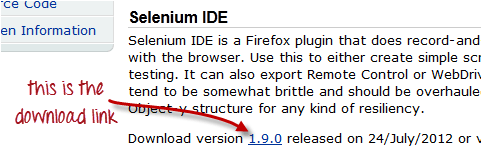
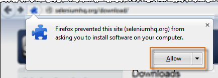
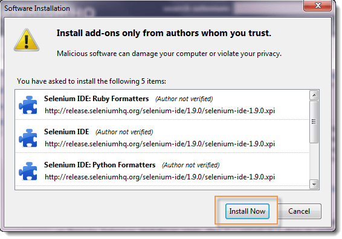
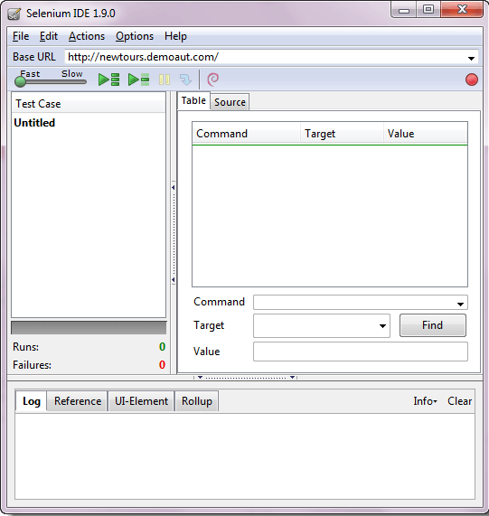

Installing Selenuim IDE
Installation of Selenium IDE
What you need:
- Mozilla Firefox
- Active Internet Connection
Steps
Launch Firefox and navigate to http://seleniumhq.org/download/. Under the Selenium IDE section, click on the link that shows the current version number.
For security, a Firefox notification will pop up. Click on "Allow."
Wait until Firefox completes the download and then click "Install Now."
Wait until the installation is completed. In the pop-up window, click "Restart Now."

After Firefox has restarted, launch Selenium IDE using either of two ways:
- By pressing Ctrl+Alt+S
- By clicking on the Firefox menu button > Web Developer> Selenium IDE
Selenium IDE should launch as shown below
Plugins
Selenium IDE can support additional Firefox add-ons or plugins created by other users. By default, Selenium IDE comes bundled with 4 plugins:
- 1. Selenium IDE: C# Formatters
- 2. Selenium IDE: Java Formatters
- 3. Selenium IDE: Python Formatters
- 4. Selenium IDE: Ruby Formatters
User Extensions
Selenium IDE can support user extensions to provide advanced capabilities. User extensions are in the form of JavaScript files. You install them by specifying their absolute path in either of these two fields in the Options dialog box.
- Selenium Core extensions (user-extensions.js)
- Selenium IDE extensions